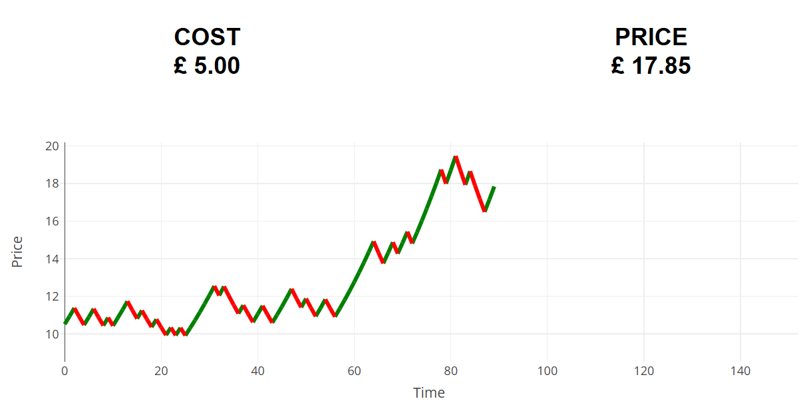

<!DOCTYPE html>
<html lang="en">
<head>
  <meta charset="UTF-8" />
  <title>Demo: Graph vs Number</title>

  <!-- Favicons -->
  <link href="assets/img/favicon.png" rel="icon">
  <link href="assets/img/apple-touch-icon.png" rel="apple-touch-icon">

  <!-- Load jsPsych CSS -->
  <link href="https://cdn.jsdelivr.net/npm/jspsych@7.3.0/css/jspsych.css" rel="stylesheet" />

  <!-- Load jsPsych JS and Plugins -->
  <script src="assets/js/jspsych.js"></script>
  <script src="assets/js/myfunctions.js"></script>
  <script src="assets/js/plotly-2.16.1.min.js"></script>
  <script src="assets/js/judgmental-forecasting-inforep.js"></script>
  <script src="assets/js/plugin-html-button-response.js"></script>
  <link href="assets/css/jspsych.css" rel="stylesheet" type="text/css" />
  <link href="assets/css/style.css" rel="stylesheet" type="text/css" />
  <style>
    .centre {
    margin-left: auto;
    margin-right: auto;
}

    .buttons {
        margin-left: 30px;
        margin-right: 30px;
        margin-top: 20px;
        margin-bottom: 20px;
        padding: 8px 30px;
        font-size: 16px;
    }

    .instructions {
        line-height: 36px;
        text-align: left;
        max-width: 900px;
        margin-left: auto;
        margin-right: auto;
    }

    .instruction_pic {
        display: block;
        margin-left: auto;
        margin-right: auto;
        height: auto;
        width: 500px;
        text-align: center;
    }

    .prior-container {
        font-size: 28px;
        font-weight: bold;
    }

    .welcome {
        font-size: 60px;
        line-height: 60px;
    }

    .reminder {
        font-size: large;
        text-decoration: underline overline #ff3028;
        padding-left: 10%;
        padding-right: 10%;
    }

    .col_name {
        font-size: 14px;
    }

    .stockchart {
        width: 800px;
        height: 480px;
    }

    table {
        table-layout: fixed;
        border: 3px solid black;
        width: 900px;
        height: 300px;
    }

    th, td {
        border: 1px black;
        padding-left: 10px;
        padding-right: 10px;
        width: auto;
    }

    .placeholder {
        width: 900px;
        height: 300px;
    }

    .trialmessage {
        max-width: 900px;
        text-align: left;
        margin-left: auto;
        margin-right: auto;
    }

    .button-row-container {
        display: flex;
        flex-direction: row;
        align-items: center;
        justify-content: center;
    }

    .button-container {
        width: 180px;
        height: 60px;
        background-color: white;
        border: 2px solid black;
        margin-right: 150px;
        margin-left: 150px;
        display: flex;
        align-items: center;
        justify-content: center;
    }

    .button-text {
        font-size: 16px;
        font-weight: bold;
        color: black;
    }

    .plot {
        height: 300px;
        width: 900px;
    }

    .reward_msg_green {
        font-size: 30px;
        font-weight: bold;
        color: green;
    }

    .reward_msg_red {
        font-size: 30px;
        font-weight: bold;
        color: red;
    }

    .fixation_msg_green {
        font-size: 45px;
        font-weight: bold;
        color: #008080;
    }

    .fixation_msg_red {
        font-size: 45px;
        font-weight: bold;
        color: #800080;
    }

    #ticksign {
        font-size: 30px;
        font-weight: bold;
        color: green;
    }

    #crosssign {
        font-size: 30px;
        font-weight: bold;
        color: red;
    }

    #misssign {
        font-size: 30px;
        font-weight: bold;
        color: #FFA500;
    }

    #reward-text {
        position: absolute;
        top: 50%;
        left: 50%;
        transform: translate(-50%, -50%);
        color: #333;
        font-weight: bold;
    } 

    #confidence_slider {
        width: 100%;
        margin: 10px 0;
    }

    #slider_value {
        font-size: 24px;
        font-weight: bold;
        color: black;
    }

    .close_msg {
        font-size: 36px;
        font-weight: bold;
        color: black;
    }

    th, td {
        border: 1px solid #ddd;
        padding: 8px;
        text-align: center;
    }

    .green {
        color: green;
    }

    .red {
        color: red;
    }

    .required {
        color: red;
    }

    input[type="radio"] {
        margin-right: 50px;
    }
    .trialmessage {
        max-width: 900px;
        text-align: left;
        margin-left: auto;
        margin-right: auto;
    }

    .dashboard-container {
        display: grid;
        grid-template-columns: 1fr 1fr;
        grid-template-rows: 1fr;
        align-items: center;
        justify-content: center;
        gap: 10px; 
        padding: 10px;
    }

    .dashboard-screen-container {
        display: inline-block;
        width: 350px;
        height: 50px;
        align-self: center;
        justify-self: center;
        background-color: white;
        color: black;
        font-family: Arial, sans-serif;
        font-weight: bold;
        font-size: 24px;
        text-align: center;
        padding: 20px;
        border-radius: 10px;
    }
      
    .dashboard-text {
        font-size: 24px;
        font-weight: bold;
        color: black;
    }

    .green-ball {
        width: 30px;
        height: 30px;
        background-color: green;
        border-radius: 50%; /* Makes it round */
        display: inline-block;
    }

    .red-ball {
        width: 30px;
        height: 30px;
        background-color: red;
        border-radius: 50%; /* Makes it round */
        display: inline-block;
    }

    .slider-container {
        text-align: center;
    }

    .labels {
        display: flex;
        justify-content: space-between;
        margin-top: 10px;
    }

    #slider {
        width: 100%;
        margin: 20px 0;
    }

    .input-container {
        margin: auto;
        padding: 20px;
        text-align: center;
    }

    .confidence-container {
        justify-content: center;
        align-items: center;
        display: none
    }

    .confidence-option-container {
        display:flex;
        justify-content: center;
        align-items: center;
        padding: 10px
    }

    .confidence-option {
        border: 1px solid #ccc;
        padding: 20px;
        width: 150px;
        height: 60px;
    }

    .selected {
        background-color: #007bff;
        color: white;
        border-color: #0056b3;
    }

    #submit-reminder {
        display: none;
    }

    input[type="number"] {
        width: 25%;
        padding: 10px;
        border: 1px solid #ccc;
        border-radius: 4px;
        font-size: 16px;
    }

    .instructions-img {
        display: block;
        margin-left: auto;
        margin-right: auto;
        width: 40%; 
        height: auto;
        border: 3px solid;
    }
    .practise-container {
        position: relative;
    }
    .practise-img {
        display: block;
        margin-left: auto;
        margin-right: auto;
        width: 60%; 
        height: auto;
    }
    .title {
        top: 0px;
        text-align: center;
        font-size: 2.5em; 
        font-weight: bold;
      }
    .bottom-left {
        position: absolute;
        bottom: -15px;
        left: 40px;
        font-size: 22px;
      }
    .bottom-right {
        position: absolute;
        bottom: -15px;
        right: 40px;
        font-size: 22px;
      }

    datalist {
        display: flex;
        justify-content: space-between;
      }
      
    option {
        padding: 0;
    }

    .jspsych-content .jspsych-instructions,
    .jspsych-content .instructions,
    .jspsych-survey-question,
    .jspsych-survey-question p,
    .jspsych-survey-question label,
    .jspsych-survey-question .jspsych-survey-response,
    .jspsych-survey-text .jspsych-survey-text-preamble, 
    .jspsych-survey-multi-choice .jspsych-response,
    .jspsych-survey-likert .jspsych-survey-likert {
      text-align: left !important;
    }

    jspsych-content .jspsych-instructions *,
    .jspsych-content .instructions * {
      text-align: left !important;
    }
  </style>

</head>
<body>
  <!-- jsPsych container -->
  <div id="jspsych-target" style="width: 100%; height: 900px; border: 1px solid #ddd; position: relative;"></div>

  <script>
    const jsPsych = initJsPsych({
      display_element: 'jspsych-target',
      on_finish: function() {
        jsPsych.data.displayData();
      }
    });

    let instruction_html = `
        <div style="text-align: left; margin: auto; max-width: 900px;">
          <h2>Instructions</h2>
          <p>Please read the instructions carefully.</p>
          <p>You will be presented with 5 independent rounds of a simulated financial trading environment.
          You will act as a trading specialist whose job is to make trading decisions for your firm.<br></p>
          <p>In each round: 
            <ul>
              <li>At any instant, you can choose whether or not to activate the option to buy a stock at a fixed cost and sell at the current price.<br> If and when you activate the option you earn the current price minus the fixed cost.<br></li>
              <li>If you sell at a price greater than the cost, you will make a gain.<br>To prevent you from making a loss, you can <b>NOT</b> activate the option if the current price is lower than the cost.<br></li>
            </ul>
          <span style="font-weight:bold">Price Changes</span>
          <p>The stock prices are in pounds sterling (£).</p>
          <p>At every update, the price of the stock increases by 3% with a two-thirds (67%) chance or it decreases by 3% with a one-third (33%) chance.
          </p>
          <span style="font-weight:bold">Stock Delisting and End of Round</span>
          <p>Stocks can be delisted. If a stock is delisted, the round ends and you get £0.</p>
          <ul>
            <li>
                This happens randomly: every time the price updates, there is a 1.4% probability that the stock is delisted.<br>
                This means that in roughly half of the trials the stock gets delisted within 25 seconds, and, in the other half, the stock gets delisted after 25 seconds, but it may get delisted very quickly or take a long time to get delisted. 
            </li>
            <li>
                If you don't activate the option, the current round will end only when the stock is delisted. 
                This makes the maximum length of a round random.
                To avoid extremely long rounds, the maximum length of a round is capped at 300 seconds, though an average round will be much shorter.
            </li>
          </ul>
          <p>The round ends when you activate the option or when the stock gets delisted, whichever happens first.</p>
          <span style="font-weight:bold">Interface</span>
          <p>At the beginning of each round, you will see the starting price of the stock and the cost of the option.</p>
          <p>The trial starts after you press "Enter".</p>
          <p>Each round, you will be shown the cost of the option for that round, a dynamic price chart showing the price updates in real-time, and a label to remind you how to activate the stock option. <br>
          Below is an example of what you will see:</p>
          <p></p>
          <br>
        </div>
      `;

    const welcome = {
      type: jsPsychHtmlButtonResponse,
      stimulus: instruction_html,
      choices: ['Start'],
    };

    let timeline = [welcome]

    for(let i = 0; i < 5; i ++){
      let trial = {
        type: JudgmentalForecastingInfo,
        step_size: 0.03,
        change_rate: 2/3,
        extinction_rate: 0.014,
        trading_cost: 1,
        trial_duration: 300000,
        exchange_rate: 4.05,
        init_price_min: Math.exp(0.1 * 0.9),
        init_price_max: Math.exp(0.1 * 0.9)
      }
      trial.seed = "DEMO" + i + Math.random();
      trial.move_method = "GBM";
      trial.upper_bound = Math.exp(0.1 * 0.9) * 0.5;
      trial.lower_bound = Math.exp(0.1 * 0.9) * -0.5;
      trial.trace_color = "#000000";
      trial.graphical_rep = true;
      trial.candle_rep = false;
      trial.percent_rep = false;
      trial.tabular_rep = false;
      trial.candle_draws = 1;
      timeline.push(trial)
    }    

    jsPsych.run(timeline)
    
  </script>

</body>
</html>